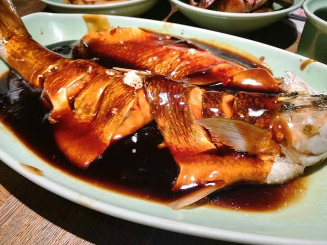
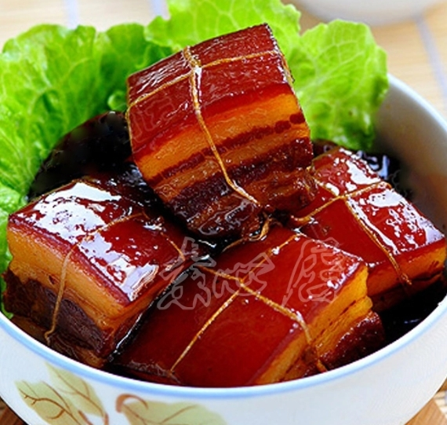
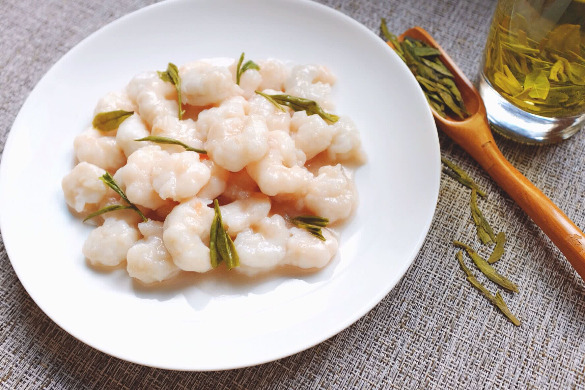

浙菜
菜系简介
浙菜是中国八大菜系之一，源自浙江地区，以鲜嫩、清爽、精致著称。浙菜讲究"四时之鲜"，注重原料的季节性和新鲜度，擅长炒、炸、烩、蒸等烹饪方法。浙菜中的杭州菜、宁波菜、绍兴菜等各具特色。
代表菜品

西湖醋鱼
简介
西湖醋鱼是杭州传统名菜，选用西湖草鱼，鱼肉鲜嫩，酸甜适口，色泽红亮，体现了浙菜"鲜、嫩、爽"的特点。
主要食材
- 草鱼 1条
- 白糖、醋
- 酱油、料酒
- 姜末、淀粉
做法步骤
- 鱼处理干净，改刀
- 沸水中汆烫至熟
- 调制糖醋汁
- 浇汁，撒姜末

东坡肉
简介
东坡肉是浙菜经典，相传为苏东坡所创。选用五花肉，小火慢炖，肉质酥烂，肥而不腻，入口即化，色泽红亮。
主要食材
- 五花肉 500克
- 黄酒、酱油
- 冰糖、葱姜
- 八角、桂皮
做法步骤
- 五花肉切方块焯水
- 加入调料和香料
- 小火慢炖2小时
- 收汁至浓稠

龙井虾仁
简介
龙井虾仁是杭州特色名菜，选用鲜活河虾和西湖龙井茶叶，虾仁洁白鲜嫩，茶香清幽，体现了浙菜"清淡雅致"的特点。
主要食材
- 鲜活河虾 300克
- 龙井茶叶
- 蛋清、淀粉
- 盐、料酒
做法步骤
- 虾仁上浆腌制
- 龙井茶泡开取茶汤
- 虾仁滑油至熟
- 加入茶汤快速翻炒